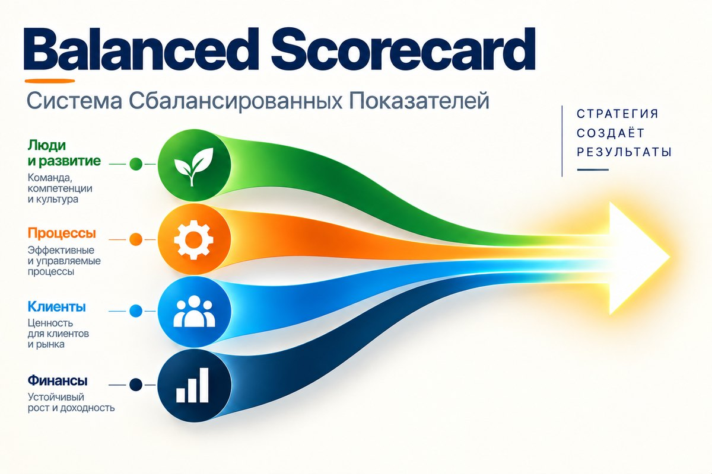
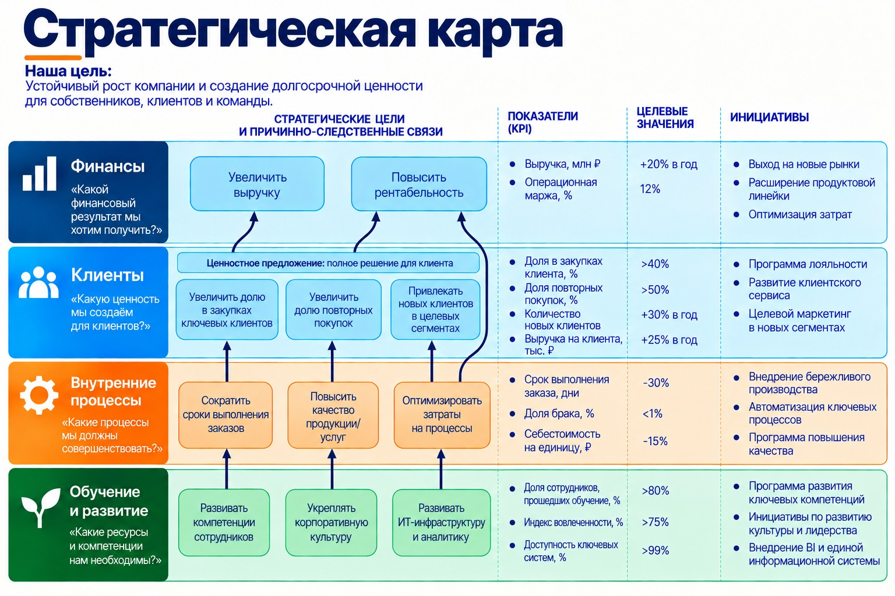

Balanced Scorecard: как превратить стратегию в систему целей и показателей
Мы продолжаем серию о системах управления компанией. Уже рассмотрели EOS и Scaling Up — готовые системы, которые охватывают управление целиком. Теперь разбираем подходы, которые глубже прорабатывают отдельные его элементы, и сравниваем их парами. Почему именно так — объясняю во вводной статье серии.
Первая пара — стратегия и цели. После того как собственник определил, в каком бизнесе работает компания, чего она хочет достичь и за счёт чего собирается этого добиться, возникает вопрос: как превратить стратегию в конкретные цели, показатели и действия?
Для этого рассмотрим Balanced Scorecard Роберта Каплана и Дэвида Нортона и OKR, связанный с работами Энди Гроува в Intel и получивший широкое распространение благодаря Google. Они решают связанные задачи, но делают это по-разному. Сначала разберём Balanced Scorecard, а затем отдельной статьёй рассмотрим OKR и сравним два подхода.
Balanced Scorecard
Выручка и прибыль — важные показатели состояния бизнеса. Но это итоговые результаты. Они зависят от того, как устроена компания, насколько хорошо она понимает клиентов, как работают внутренние процессы и какие компетенции есть у сотрудников и руководителей.
Если смотреть только на финансы, проблему можно увидеть значительно позже, чем она возникла. Поэтому важно отслеживать не только результат, но и факторы, которые к нему приводят.
Balanced Scorecard, или сбалансированная система показателей, предлагает рассматривать компанию через четыре взаимосвязанные составляющие:
- Финансы — каких результатов должен достичь бизнес.
- Клиенты — какую ценность компания создаёт для выбранных клиентов и как они это оценивают.
- Внутренние процессы — какие процессы должны работать особенно хорошо.
- Обучение и развитие — какие компетенции, технологии и управленческие возможности нужны компании для достижения целей.

Стратегические карты
Чтобы определить цели в каждой составляющей и связать их между собой, используют стратегические карты. Они показывают, каким образом развитие компетенций, улучшение процессов и работа с клиентами должны привести к нужным финансовым результатам.
При этом клиентская составляющая начинается не с абстрактного повышения удовлетворённости. Компания должна определить, для каких клиентских сегментов она работает и какое ценностное предложение делает им. Каплан и Нортон выделяют четыре типовых:
- низкие общие издержки;
- лидерство продукта;
- полное решение для клиента;
- закрепление клиента — ситуация, когда переход к конкуренту связан для него с существенными издержками.
Остальные цели стратегической карты должны поддерживать именно этот выбор.
При разработке стратегической карты руководство обычно движется от желаемых финансовых и клиентских результатов к необходимым внутренним процессам, а затем — к компетенциям, технологиям и другим возможностям компании. В готовой карте эта логика прослеживается в обратном направлении:
- развитие компетенций сотрудников позволяет улучшить внутренние процессы;
- более стабильные и быстрые процессы повышают качество обслуживания;
- это укрепляет отношения с клиентами;
- в результате компания получает рост продаж, удержания клиентов или рентабельности.
Стратегическая карта помогает определить показатели для каждой цели и увидеть пропущенные звенья. Если компания хочет увеличить прибыль за счёт роста продаж, но не определила, какое ценностное предложение, процессы и компетенции должны это обеспечить, стратегия остаётся набором пожеланий.
Связи на стратегической карте — это гипотезы руководства о том, как устроен бизнес. Их нужно проверять по промежуточным и итоговым результатам, отслеживать влияние стратегических инициатив и при необходимости пересматривать не только действия, но и сами стратегические предположения.
При выборе показателей важно различать два типа:
- Показатели результатов отражают, чего компания уже достигла: выручка, прибыль, удержание клиентов, рентабельность.
- Опережающие показатели отражают факторы, которые должны привести к этим результатам: качество процессов, скорость обслуживания, развитие компетенций, внедрение новых продуктов.
Такое сочетание позволяет одновременно видеть итог и понимать, за счёт чего он должен появиться.

Как BSC встраивается в управление
Когда стратегические цели и показатели определены, их нужно встроить в регулярное управление компанией.
- Установить целевые значения и сроки их достижения.
- Определить стратегические инициативы — конкретные проекты и изменения, которые должны закрыть разрыв между текущим состоянием компании и стратегическими целями. Показатели отражают, движется ли компания в нужную сторону, а инициативы определяют, что именно нужно изменить, чтобы это движение стало возможным.
- Согласовать цели подразделений и бизнес-единиц с общей стратегией. Для каждой бизнес-единицы и вспомогательной функции нужно определить, какие цели общей стратегии она поддерживает и какие инициативы должна реализовать. Это не механическое каскадирование показателей сверху вниз: подразделения должны понимать, какие изменения в их работе необходимы для реализации стратегии.
- Связать стратегию с планированием и бюджетом, чтобы необходимые изменения получали ресурсы. Важно различать текущую деятельность и стратегические изменения: операционные планы поддерживают сегодняшний результат, а стратегические инициативы требуют отдельных решений о ресурсах, сроках и ответственности. Пока таких решений нет, стратегические проекты финансируются по остаточному принципу.
- Регулярно обсуждать результаты, проверять ход инициатив и при необходимости менять цели, ресурсы или действия. Здесь особенно важна роль первого лица. BSC должна быть инструментом управленческого диалога: руководители не только смотрят на отклонения, но и обсуждают причины результатов, стратегические предположения и необходимые изменения.
Ограничения подхода
Balanced Scorecard не заменяет анализ отрасли, конкурентов и выбор стратегического направления. Но сам процесс разработки стратегической карты помогает руководству уточнить стратегию, договориться о приоритетах и превратить общие намерения в систему конкретных целей и действий.
Кроме того, связи между целями на карте остаются гипотезами. Их необходимо проверять по результатам, иначе система может создать убедительную, но ошибочную картину того, как работает бизнес.
Есть и практический риск: при формальном внедрении BSC сводится к набору KPI. Я вижу это регулярно: показатели разработаны, отчёт готовится, а связи между ними, стратегическими инициативами, бюджетом и решениями руководства нет. Система показывает состояние бизнеса, но не помогает последовательно менять его.
Что закрывает Balanced Scorecard
BSC не является полной системой управления компанией. Она непосредственно закрывает два направления:
- Стратегическое планирование — помогает перевести стратегию в систему целей, связей и инициатив.
- Управление эффективностью — задаёт показатели, целевые значения и регулярный цикл обсуждения результатов.
Другие элементы управления компанией она затрагивает косвенно. Организационная структура появляется через согласование бизнес-единиц, распределение целей и определение вклада подразделений. Процессы связываются со стратегическими приоритетами, но сама BSC не является методологией их улучшения. Развитие руководителей и культура затрагиваются через лидерство, вовлечение сотрудников и изменение управленческих привычек, но не раскрываются как самостоятельные направления.
Что почитать подробнее
- Роберт Каплан, Дэвид Нортон — «Сбалансированная система показателей. От стратегии к действию».
- Роберт Каплан, Дэвид Нортон — «Стратегические карты. Трансформация нематериальных активов в материальные результаты».
- Роберт Каплан, Дэвид Нортон — «Организация, ориентированная на стратегию».
Источники: Robert S. Kaplan, David P. Norton, The Balanced Scorecard: Translating Strategy into Action (1996); The Strategy-Focused Organization (2001); Strategy Maps: Converting Intangible Assets into Tangible Outcomes (2004).